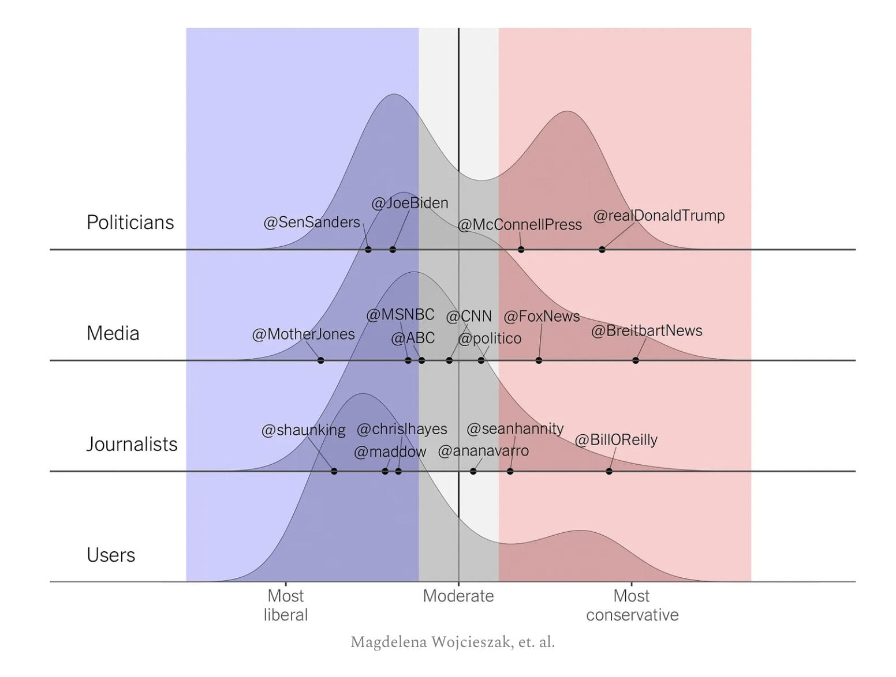

Aug 7th, 2023
- Vibes X - Twitter https://www.natesilver.net/p/twitter-elon-and-the-indigo-blob Nate Silver

- Quote Nate Silver But considering that Twitter was already left-skewed, and that Trump was by far the most prominent exception, [banning Trump] further entrenched Twitter as a space for the Blob to talk amongst itself, without all the deplorables to get in the way. That’s why, to a certain type of progressive figure, it literally felt like Musk was “opening the gates of hell” when he unbanned Trump and other conservative accounts.
- Quote Brad Bird Animation isn't a genre, westerns are a genre... Anime is an artform